السلسلة 11
الشاحنة (صنف C) · 20 سؤال. كل سؤال فيه الصورة والصوت. اختار الجواب (ولا جوج إلا كانو صحاح)، ورك على «تأكيد» باش تشوف واش صبتي.
- 20سؤال
- 16باش تنجح
- 1 – 4جواب واحد ولا أكثر
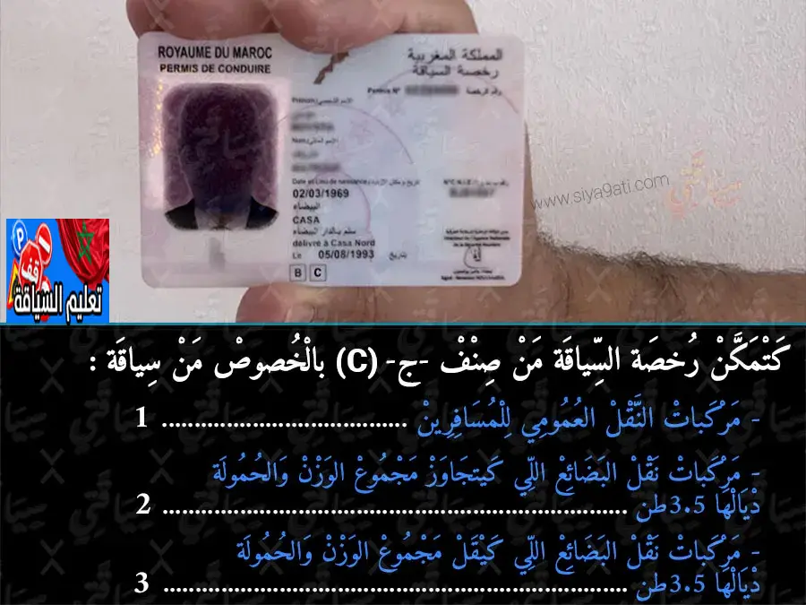
الكلافيي: 1–4 للجواب، Enter للتأكيد وللسؤال الجاي.
السلسلة 11 · النتيجة ديالك
0 / 20
السلسلة 11
الشاحنة (صنف C) · 20 سؤال، بالصوت، مع الجواب الصحيح والشرح.
السؤال 1
بيّن الجواب
الجواب الصحيح: 2
رخصة السياقة من صنف ج (C) تعطيك الحق تسوق شاحنات نقل البضائع اللي مجموع الوزن ديالها مع الحمولة كيتجاوز 3.5 طن. هذا هو تعريف هاد الصنف في مدونة السير المغربية، وهو مخصص فقط للشاحنات الثقيلة. علاش ما اخترناش الاختيار 1؟ -مركبات النقل العمومي للمسافرين- خاص بصنف د (D)، يعني رخصة C ما كتسمحش تسوق الحافلات أو الطوبيسات ديال نقل المسافرين. وعلاش ما اخترناش الاختيار 3؟ -مركبات نقل البضائع اللي كيثل مجموع الوزن والحمولة ديالها 3.5 طن- كيتكلم على الشاحنات الصغيرة (3.5 طن أو أقل)، وهذ النوع يمكن تسوقو برخصة B. أما صنف C فهو مخصص فقط للشاحنات اللي الوزن ديالها مع الحمولة كيتجاوز 3.5 طن. الجواب الصحيح هو رقم 2.
السؤال 2
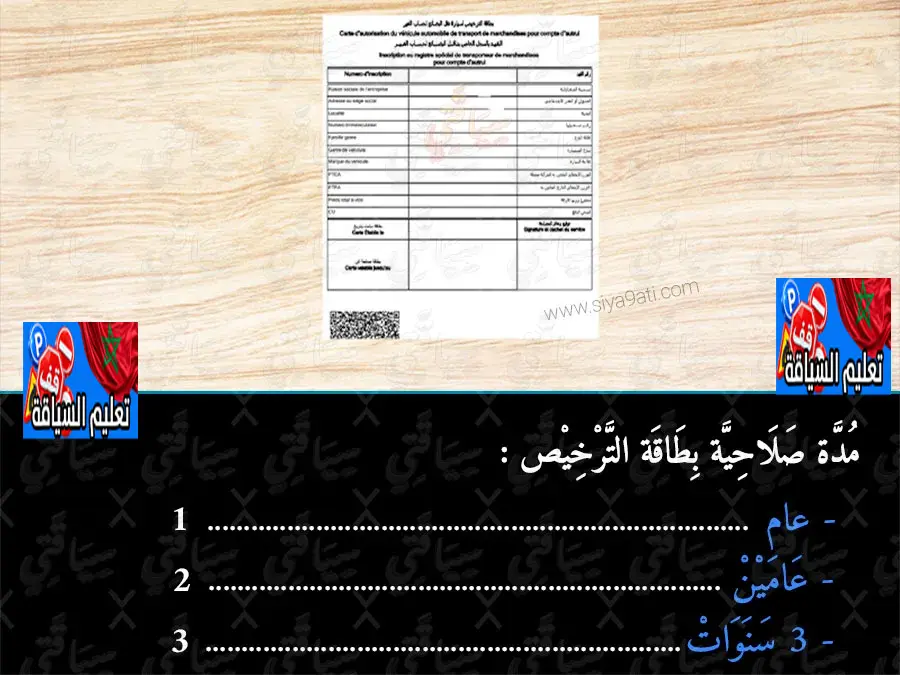
بيّن الجواب
الجواب الصحيح: 2
بطاقة الترخيص أو ما يُعرف بـ بطاقة الاستغلال هي وثيقة إدارية تُسلَّم لأصحاب الشاحنات المخصصة لنقل البضائع لحساب الغير، وهي ضرورية لمزاولة هذا النشاط بشكل قانوني. مدة صلاحية هذه البطاقة هي سنتان (عامين)، ويجب تجديدها قبل انتهاء صلاحيتها للاستمرار في العمل بدون مشاكل قانونية. الجواب الصحيح هو رقم 2,
السؤال 3
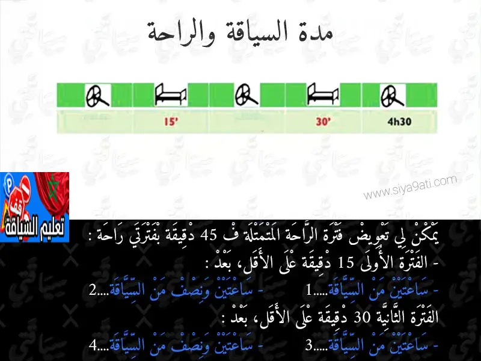
بيّن الجواب
الجواب الصحيح: 1 و 4
حسب قانون مدوّنة السير المغربية (وأيضًا حسب التشريعات الأوروبية التي تعتمدها العديد من الدول): يمكن تعويض فترة الراحة الإجبارية الممتدة لـ 45 دقيقة على الشكل التالي: المرحلة الأولى: راحة لمدة 15 دقيقة على الأقل، ويجب أخذها بعد ساعتين من السياقة على الأكثر. المرحلة الثانية: راحة لمدة 30 دقيقة على الأقل، ويجب أخذها بعد ساعتين ونصف من السياقة على الأكثر. ✅ هذا يعني أنه يمكن تقسيم فترة الراحة إلى جزئين (15 دقيقة + 30 دقيقة)، بشرط ألا تتجاوز مدة السياقة بينهما المدد المحددة (ساعتين للأولى وساعتين ونصف للثانية). الجواب الصحيح هو رقم 1 و 4.
السؤال 4
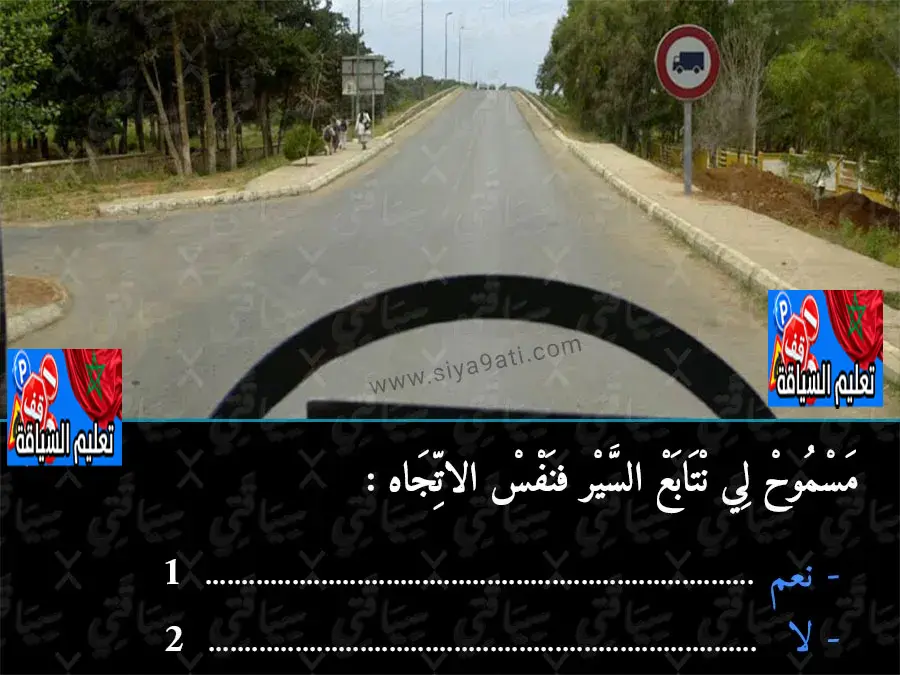
بيّن الجواب
الجواب الصحيح: 2
إذا كنت تقود شاحنة ووجدت علامة منع مرور الشاحنات (🚛⭕️) أمامك، فهذا يعني أن السير في نفس الاتجاه ممنوع بالنسبة للشاحنات. ↩️ حتى وإن كان الطريق يبدو مفتوحًا أو به حركة، وجود علامة المنع يعني أنك لا تملك الحق في متابعة السير في ذلك الاتجاه. ❌ مواصلة السير تعتبر مخالفة قانونية. الجواب الصحيح هو رقم 2.
السؤال 5
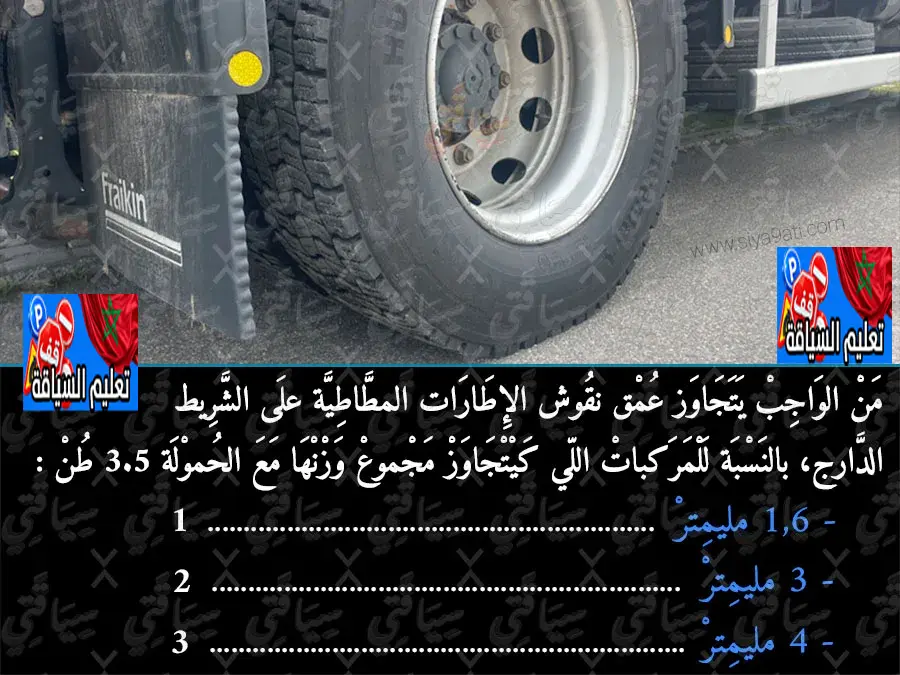
بيّن الجواب
الجواب الصحيح: 2
حسب مدونة السير المغربية، ووفقًا لمعايير السلامة، يُشترط أن يتجاوز عمق نقوش الإطارات (عمق التآكل أو النقش في العجلة) حدًّا أدنى معين لضمان التماسك الجيد مع الطريق، خاصة في الظروف الرطبة أو الزلقة. 🚛 بالنسبة للمركبات التي يتجاوز وزنها الإجمالي مع الحمولة 3.5 طن (مثل الشاحنات أو المركبات المهنية الثقيلة)، يجب أن يكون عمق النقش في الإطارات على الشريط الدارج لا يقل عن: 👉 3 ميليمتر 📉 إذا قلّ العمق عن هذا الحد، تصبح العجلات غير آمنة، ويُعتبر ذلك مخالفة قانونية وخطرًا على السلامة. 📌 معلومة مهمة: 🔧 هذا الشرط لا يطبّق فقط عند الفحص التقني، بل أيضًا أثناء السير اليومي. 👮 يمكن لعناصر المراقبة الطرقية التحقق من الإطارات، وقد تُفرض غرامات أو يُمنع السير في حالة عدم احترام هذا المعيار. الجواب الصحيح هو رقم 2.
السؤال 6
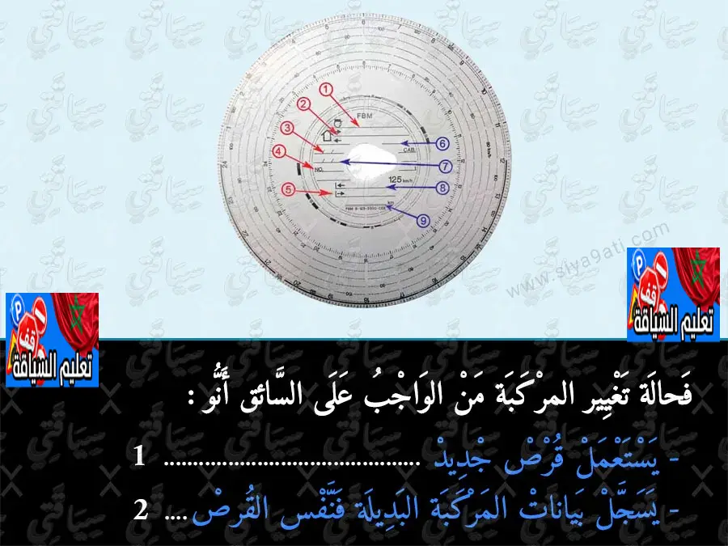
بيّن الجواب
الجواب الصحيح: 2
في حالة تغيير الشاحنة، من الواجب على السائق الذي يستعمل قرص التسجيل (القرص التاكيغرافي) أن يقوم بما يلي: 📄 تسجيل بيانات الشاحنة الجديدة (رقم التسجيل، الكيلومتراج، التاريخ...) على نفس القرص الذي بدأ به التسجيل في الشاحنة السابقة. ⛔ الهدف من هذا الإجراء هو ضمان استمرارية تسجيل بيانات السياقة والراحة بشكل دقيق، وتفادي انقطاع أو فقدان المعطيات في حالة المراقبة. القرص التاكيغرافي يُستعمل أساسًا في الشاحنات والحافلات، وهو يُسجّل: عدد ساعات السياقة فترات الراحة السرعة تغيير المركبة وكل هذه المعطيات يمكن مراقبتها من طرف رجال الدرك أو الشرطة. الجواب الصحيح هو رقم 2.
السؤال 7
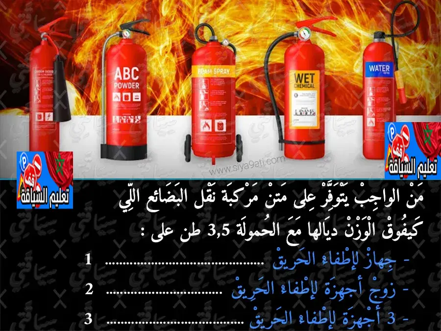
بيّن الجواب
الجواب الصحيح: 2
حسب مدونة السير المغربية والمعايير المرتبطة بسلامة المركبات المخصصة لنقل البضائع، فإنه: 🔴 إذا كانت المركبة يتجاوز وزنها الإجمالي مع الحمولة 3.5 طن، فإنه من الواجب القانوني أن تتوفر على: زوج (2) من أجهزة إطفاء الحريق وليس جهازًا واحدًا فقط. 📦 هذا الشرط خاص بمركبات نقل البضائع الثقيلة، والهدف منه هو التدخل السريع في حال حدوث حريق في المحرك أو في الحمولة، لتفادي انتشار النيران أو التسبب في حوادث خطيرة. ⚠️ تنبيه مهم للمترشحين: ⛔ عدم توفر المركبة على العدد المطلوب من أجهزة الإطفاء يُعتبر مخالفة ويمكن أن يؤدي إلى: رفض الفحص التقني مخالفة قانونية عند المراقبة مسؤولية مضاعفة في حالة وقوع حادث. الجواب الصحيح هو رقم 2.
السؤال 8
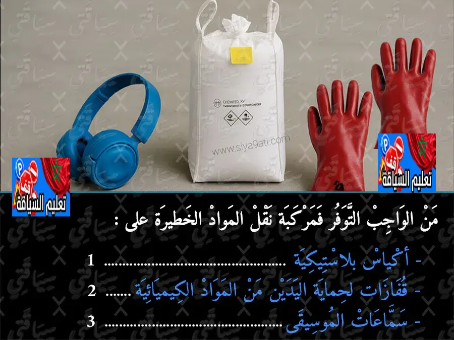
بيّن الجواب
الجواب الصحيح: 1 و 2
حسب قانون السير والسلامة الطرقية، خاصة بالنسبة لمركبات نقل المواد الخطيرة (les matières dangereuses)، من الواجب القانوني أن تتوفر هذه المركبات على مجموعة من معدات السلامة والوقاية، من بينها: 1️⃣ أكياس بلاستيكية خاصة: 🟢 تُستخدم لتجميع أو تغليف المواد المتسربة أو الملوّثة. 🛑 تساعد على التدخل الفوري في حال تسرب مادة خطيرة أثناء النقل. 2️⃣ قفازات واقية من المواد الكيميائية: 🧤 لحماية السائق أو العمال من الاتصال المباشر بالمواد السامة أو الحارقة أو الخطيرة. 🛑 ارتداؤها يُعتبر إجراءً أساسيًا لتجنب الحروق أو التسمم. ❌ لماذا الخيار الثالث غير صحيح؟ 3️⃣ سماعات الموسيقى لا تدخل ضمن لائحة المعدات الإلزامية لمركبات نقل المواد الخطيرة، بل قد تُشكل خطرًا على التركيز والانتباه أثناء القيادة. 📌 معلومة للمترشحين: مركبات نقل المواد الخطيرة تخضع لمراقبة مشددة، وتشمل تجهيزات إلزامية مثل: مثلثات الخطر لافتات تحذيرية وثائق النقل الخاصة معدات وقائية (قفازات، أقنعة، أكياس...) عدم احترام هذه الشروط قد يؤدي إلى غرامات كبيرة أو منع من السير. الجواب الصحيح هو رقم 1 و 2.
السؤال 9
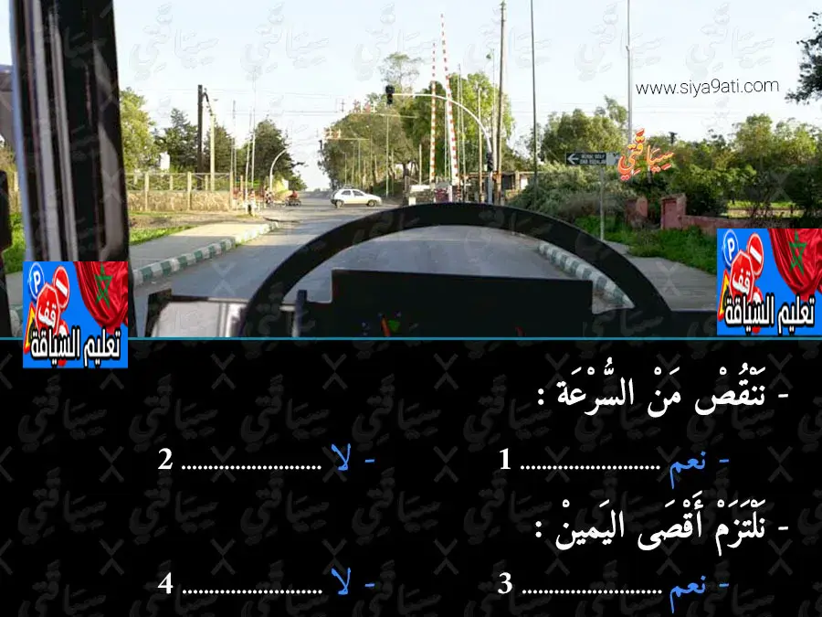
بيّن الجواب
الجواب الصحيح: 1 و 3
عند الاقتراب من ملتقى طرق والإشارة الضوئية لا تشتغل، يكون الخطر مرتفعًا بسبب غياب تنظيم لحركة المرور. في هذه الحالة، يجب على السائق أن: ينقص من السرعة، لأن التقاطع أصبح غير منظم، ولابد من الحذر والانتباه لمستعملي الطريق القادمين من الاتجاهات الأخرى. يلتزم بأقصى اليمين، لتسهيل الرؤية وحركة المرور، وللتصرف بطريقة وقائية تمنع الاصطدام. 🛑 عدم الانتباه في مثل هذه الحالة قد يؤدي لحادث، خاصة أن بعض السائقين قد لا ينتبهون لغياب الإشارة أو لا يطبقون قاعدة -الأولوية لليمين-. 📌 خلاصة: عندما لا تشتغل الإشارة الضوئية في ملتقى الطرق: ❗ خفف السرعة ❗ التزم اليمين ❗ طبق قاعدة الأولوية لليمين إذا لم تكن هناك علامات. الجواب الصحيح هو رقم 1 و 3.
السؤال 10
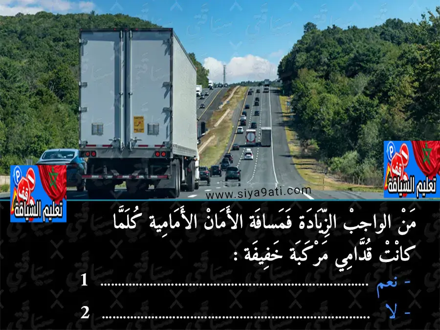
بيّن الجواب
الجواب الصحيح: 1
من الضروري زيادة مسافة الأمان الأمامية عندما تكون المركبة التي تسير أمامك خفيفة (مثل سيارة صغيرة)، وذلك لأن: 🚗 المركبات الخفيفة تتوقف في مسافة أقصر عند الفرملة مقارنة بالشاحنات أو المركبات الثقيلة. 🚛 إذا كنت تقود مركبة ثقيلة (مثل شاحنة)، فأنت تحتاج إلى مسافة أطول للتوقف بسبب الوزن، وبالتالي يجب أن تترك مسافة أمان أكبر لتفادي الاصطدام إذا توقفت المركبة الخفيفة أمامك فجأة. 📌 خلاصة: ✅ كلما كانت المركبة التي أمامك أخف، زد المسافة. ⛔ إذا لم تترك مسافة كافية، فأنت معرض لاصطدام، خاصة في الطرق السريعة أو عند الفرملة المفاجئة. الجواب الصحيح هو رقم 1.
السؤال 11
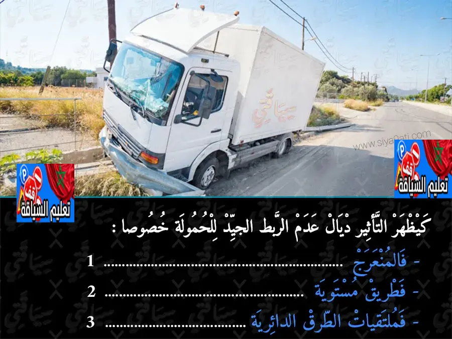
بيّن الجواب
الجواب الصحيح: 1 و 3
عدم ربط الحمولة بشكل جيد يشكّل خطرًا كبيرًا على توازن المركبة وسلامة السير، ويظهر تأثيره بشكل خاص في: 1️⃣ المنعرجات (المنعرج): ⤵️ عندما تنعطف المركبة، تؤثر قوة الطرد المركزي على الحمولة. 📦 إذا لم تكن الحمولة مربوطة بإحكام، يمكن أن تتحرك أو تميل، مما يهدد بانقلاب الشاحنة أو فقدان السيطرة. 3️⃣ ملتقيات الطرق الدائرية (الرومبوان): 🔄 تشكّل نفس خطر المنعرجات، بسبب الانعطاف المستمر، وقد تؤدي الحمولة غير المربوطة إلى اضطراب في التوازن أو انقلاب الحمولة. ❌ لماذا ليس -الطريق المستوية-؟ 2️⃣ الطريق المستوية لا تُشكّل خطرًا كبيرًا على الحمولة غير المربوطة، ما لم يكن هناك تسارع مفاجئ أو فرملة قوية. الخطر الحقيقي يظهر عند الانعطاف أو التغيير في الاتجاه. 📌 خلاصة: ربط الحمولة جيدًا ليس مجرد إجراء شكلي، بل ضرورة قانونية وأمنية، خاصةً في المنعرجات وملتقيات الطرق الدورانية. الجواب الصحيح هو رقم 1 و 3.
السؤال 12
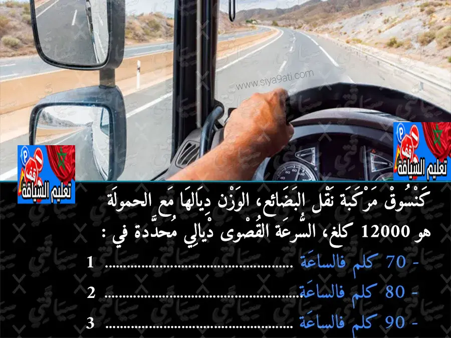
بيّن الجواب
الجواب الصحيح: 3
في هذا السؤال، المقصود هو السرعة القصوى القانونية، أي أعلى سرعة يُسمح بها قانونًا في ظروف مثالية (طريق في حالة جيدة، رؤية واضحة، عدم وجود علامات تحديد سرعة أقل...). 🚛 بما أنك تقود مركبة نقل البضائع ووزنها مع الحمولة هو 12 طن (12000 كلغ)، فحسب مدونة السير المغربية، السرعة القصوى المسموح بها على الطرق خارج المجال الحضري (طرق وطنية أو طرق سريعة) هي: 👉 90 كلم/الساعة ⚠️ ملاحظة مهمة: السؤال لا يسألك عن السرعة التي يمكنني السير بها، وإنما عن السرعة القصوى القانونية التي يمكنني السير بها. الجواب الصحيح هو رقم 3.
السؤال 13
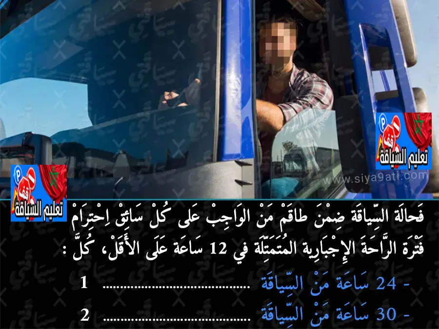
بيّن الجواب
الجواب الصحيح: 2
حسب مدونة السير على الطرق بالمغرب (المادة 16)، عند السياقة ضمن طاقم (أي على الأقل سائقان داخل القمرة)، يجب على كل سائق أن يأخذ: فترة راحة يومية جديدة لا تقل عن 12 ساعة متواصلة خلال أقل من 30 ساعة بعد نهاية الراحة السابقة. 📌 بمعنى آخر: خلال كل دورة مدتها 30 ساعة من عندما يبدأ العمل، يجب أن يتمتع السائق بفترة راحة كاملة (بحد أدنى 12 ساعة). الهدف من هذه القاعدة هو ضمان أن يتمتع كل سائق بفترة راحة كافية حتى في حالة التناوب أو السياقة المشتركة. عدم احترام هذه القاعدة يعرض السائق لعقوبات قانوني. الجواب الصحيح هو رقم 2.
السؤال 14
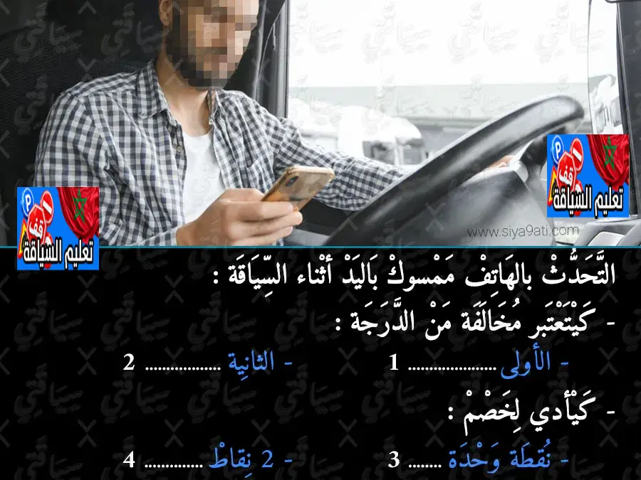
بيّن الجواب
الجواب الصحيح: 2 و 3
يُعتبر التحدّث أو استعمال الهاتف الممسوك باليد أثناء السياقة، أو أي جهاز آخر يؤدي نفس وظائف الهاتف، من بين المخالفات المنصوص عليها في مدونة السير المغربية ضمن اللائحة المحددة من قبل الإدارة. هذه المخالفة تُصنّف من الدرجة الثانية، ويُعاقب مرتكبها بغرامة مالية تتراوح بين 500 و1000 درهم، مع سحب نقطة واحدة من رصيد رخصة السياقة. ويُعد هذا السلوك خطيرًا لأنه يقلّل من تركيز السائق ويزيد من احتمالية وقوع الحوادث، إذ أن الإمساك بالهاتف أثناء القيادة يُضعف الانتباه ويؤثر على ردّة الفعل، لذلك يُوصى بعدم استعمال الهاتف نهائيًا أثناء القيادة، إلا باستخدام تجهيزات بدون يدين أو بعد التوقف التام في مكان آمن. الجواب الصحيح هو رقم 2 و 3.
السؤال 15
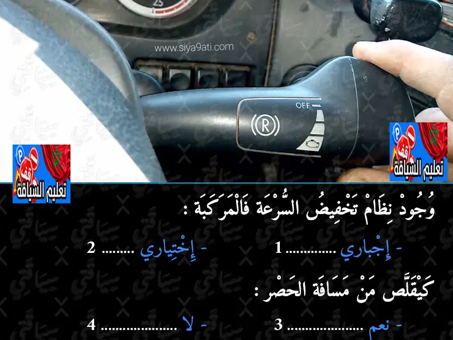
بيّن الجواب
الجواب الصحيح: 2 و 3
وجود نظام تخفيض السرعة في المركبة (مثل الفرامل المساعدة أو ما يُعرف بـ ralentisseur) يُعتبر من التجهيزات الاختيارية، أي أن القانون لا يُلزم كل السائقين أو المركبات بتوفّره، لذلك لا يُعد إلزاميًا أو إجباريًا. ومع ذلك، فإن هذا النظام يُساهم فعليًا في تقليص مسافة الحصر، لأنه يساعد على تقليل سرعة المركبة بشكل تدريجي دون الاعتماد فقط على الفرامل العادية، خصوصًا في المركبات الثقيلة مثل الشاحنات أو الحافلات. هذا ما يجعل الجواب الصحيح هو أن النظام اختياري من حيث الوجود، لكنه يساهم فعليًا في تقليص مسافة التوقف، وهو ما يُحسّن من مستوى السلامة أثناء القيادة. الجواب الصحيح هو رقم 2 و 3.
السؤال 16
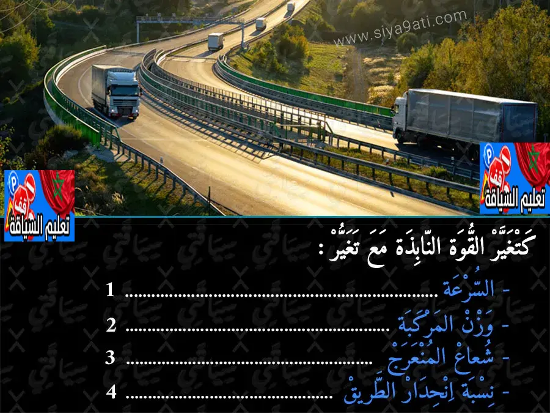
بيّن الجواب
الجواب الصحيح: 1 و 2 و 3
القوة النابذة (أو قوة الطرد المركزي) هي القوة التي يشعر بها السائق أو الحمولة عند الانعطاف، والتي تدفع الجسم نحو الخارج. تزداد هذه القوة أو تنقص حسب عدة عوامل ميكانيكية وفيزيائية. ومن بين أهم العوامل التي تؤثر مباشرة في القوة النابذة: السرعة: كلما زادت سرعة المركبة في المنعرج، زادت القوة النابذة، مما يجعل احتمال الانزلاق أو الانقلاب أعلى. وزن المركبة: الوزن الثقيل يولد قوة نابذة أكبر، وبالتالي المركبات الثقيلة معرّضة أكثر للانقلاب في المنعرجات. شعاع المنعرج: كلما كان شعاع المنعرج (نصف القطر) صغيرًا، كان المنعرج حادًا، وبالتالي تكون القوة النابذة أقوى. أما نسبة انحدار الطريق (الاختيار رقم 4)، فهي تؤثر أكثر على قوة الجذب نحو الأسفل وليس على القوة النابذة التي تتشكل في المنعرجات الجانبية. الجواب الصحيح هو رقم 1 و 2 و 3.
السؤال 17
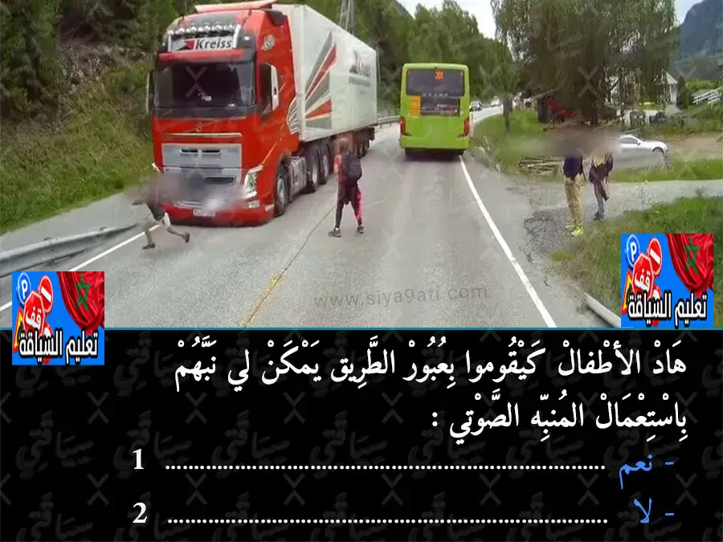
بيّن الجواب
الجواب الصحيح: 1
في حالة مثل الموضحة في الصورة، حيث يقوم الأطفال بعبور الطريق من مكان غير واضح تمامًا بسبب توقف الحافلة، فإن استعمال المنبّه الصوتي مسموح بل يُعتبر ضروريًا كتدخّل وقائي. الهدف منه هو تنبيه الأطفال لوجود مركبة قادمة، خاصة وأنهم في سن صغيرة وقد لا ينتبهون بسهولة أو لا يتوقعون وجود حركة خلف الحافلة. استعمال المنبّه الصوتي هنا لا يدخل ضمن الحالات المزعجة أو غير القانونية، بل يُعد سلوكًا وقائيًا لحماية الأطفال ومنع وقوع حادث. في مثل هذه الحالات، يجب أيضًا على السائق أن ينقص من السرعة ويستعد للتوقف في أي لحظة. الجواب الصحيح هو رقم 1.
السؤال 18
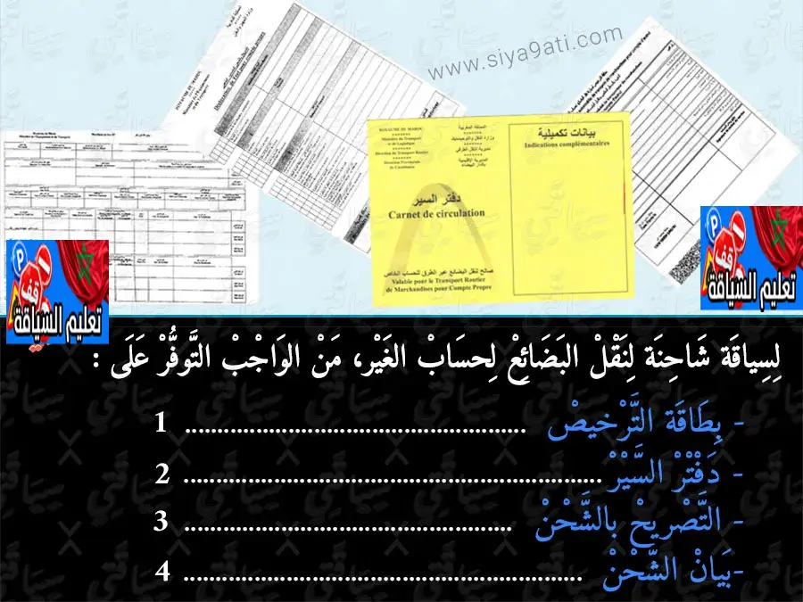
بيّن الجواب
الجواب الصحيح: 1 و 4
في حالة سياقة شاحنة لنقل البضائع لحساب الغير، من الواجب القانوني أن تتوفّر المركبة على بطاقة الترخيص، وهي الوثيقة التي تُمنح من طرف الإدارة المختصة وتُثبت أن المركبة مصرح لها قانونيًا بمزاولة نشاط نقل البضائع لحساب الغير. إلى جانب ذلك، يجب أن تكون المركبة مصحوبة بـ بيان الشحن (bordereau de chargement)، وهو الوثيقة التي تتضمّن تفاصيل الشحنة: نوع البضاعة، الكمية، نقطة الانطلاق والوصول، واسم المرسِل والمرسَل إليه. هاتان الوثيقتان إلزاميتان خلال المراقبة الطرقية، ويُعتبر غيابهما مخالفة قانونية قد تؤدي إلى غرامات أو توقيف المركبة. أما دفتر السير والتصريح بالشحن فهي وثائق غير إلزامية في هذا السياق المحدد، أو تُستعمل في أنواع خاصة من النقل (كالنقل الدولي أو المواد الخطيرة). الجواب الصحيح هو رقم 1 و 4.
السؤال 19
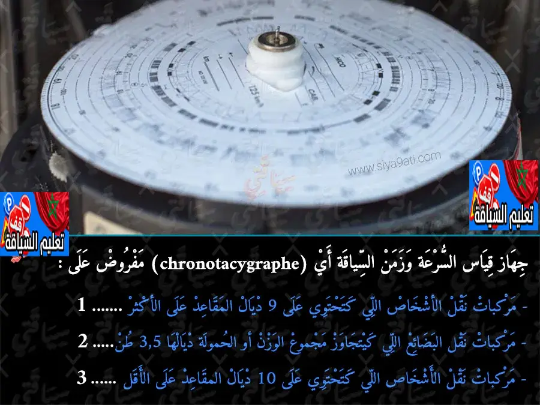
بيّن الجواب
الجواب الصحيح: 2 و 3
يُفرض استعمال جهاز قياس السرعة وزمن السياقة (chronotachygraphe) على فئات معيّنة من المركبات، طبقًا لمدونة السير المغربية والمعايير الأوروبية، بهدف مراقبة احترام السائقين لمدد السياقة وفترات الراحة، وضمان السلامة الطرقية. هذا الإلزام يشمل: ✅ مركبات نقل البضائع التي يتجاوز مجموع وزنها مع الحمولة 3.5 طن. ✅ مركبات نقل الأشخاص التي تحتوي على 10 مقاعد فأكثر (بما فيهم السائق)، مثل الحافلات والميكروباصات الكبيرة. في المقابل: ❌ المركبات التي تحتوي على 9 مقاعد فقط مع السائق، تدخل غالبًا ضمن صنف B (مثل سيارات الأجرة الكبيرة أو النقل المدرسي الصغير)، ولا يُفرض عليها جهاز chronotachygraphe. ✳️ الفرق الأساسي يكمن في عدد المقاعد الفعلي ونوع الرخصة المطلوبة، فالمركبات التي تخضع لهذا الجهاز هي عادة مهنية، وتستعمل في النقل العمومي أو نقل البضائع على نطاق واسع، وتحتاج رخصًا من صنف C أو D حسب الحالة. الجواب الصحيح هو رقم 2 و 3.
السؤال 20
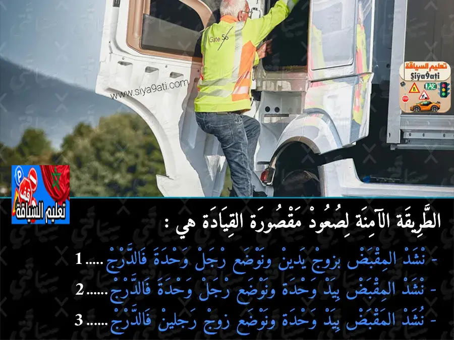
بيّن الجواب
الجواب الصحيح: 1 و 3
الطريقة الآمنة لصعود مقصورة القيادة في الشاحنات أو المركبات المرتفعة تُعتبر من الأمور المهمة التي يجب احترامها، خاصة للوقاية من السقوط أو التواء المفاصل. الصعود بطريقة غير صحيحة قد يؤدي إلى إصابات خطيرة، خصوصًا عندما تكون الأرضية زلقة أو السائق في عجلة من أمره. ✅ من بين الطرق السليمة: استعمال اليدين معًا على المقبض وتثبيت رجل واحدة فقط على الدرج أثناء الرفع (الجواب 1): وهي طريقة آمنة لأنها تعطي توازنًا أفضل أثناء سحب الجسم للأعلى. أو استعمال يد واحدة على المقبض مع تثبيت الرجلين معًا على الدرج (الجواب 3): وهي أيضًا طريقة مقبولة عندما يكون المقبض في وضع جانبي أو قريب. ❌ أما الطريقة التي تعتمد على يد واحدة ورجل واحدة فقط فهي غير آمنة، لأنها تجعل التوازن هشًّا وقد تسبب السقوط، ولهذا فهي غير معتمدة في معايير السلامة المهنية. الجواب الصحيح هو رقم 1 و 3.